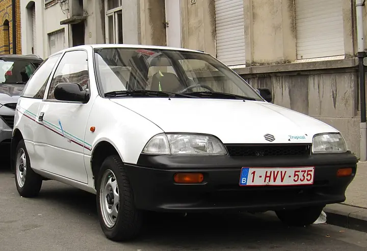
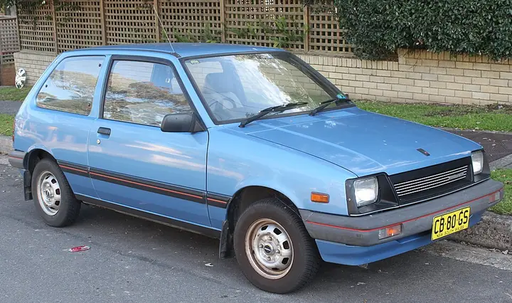

Suzuki Cultus
Second generation (1988) · 1988–2016
Abstract
This generation of the Suzuki Cultus was built 1988–2000 (Japan) in Japan: Kosai (Suzuki Kosai Plant), Canada: Ingersoll, Ontario (CAMI Automotive), China: Chongqing (Changan Suzuki) and other plants. Body styles: 2-door convertible, 3/5-door hatchback, 4-door sedan. Layout: Transverse front-engine, front-wheel-drive / four-wheel-drive.


1Specifications
| Production | 1988–2000 (Japan)1989–1993 (Canada)1989–2007 (India)1990–1996 (Indonesia)1991–1998 & 2000–2016 (Pakistan)1991–2004 (Colombia)1992–1996 (Venezuela)1992–2003 (Ecuador & Hungary)1999–2015 (China) |
|---|---|
| Assembly | Japan: Kosai (Suzuki Kosai Plant)Canada: Ingersoll, Ontario (CAMI Automotive)China: Chongqing (Changan Suzuki)Colombia: Bogotá (GM Colmotores)Ecuador: Quito (AYMESA/GM de Ecuador)Hungary: Esztergom (Magyar Suzuki)India: Gurgaon (Maruti Suzuki)Indonesia: Bekasi (Suzuki Indomobil Motor)Pakistan: Karachi (Pak Suzuki Motors)Venezuela: Valencia (GM Venezolana) |
| Body style | 2-door convertible3/5-door hatchback4-door sedan |
| Layout | Transverse front-engine, front-wheel-drive / four-wheel-drive |
| Engine | 1.0 L G10A SOHC 6V I31.0 L G10BB SOHC 16V I41.0 L G10T SOHC 6V I3 turbo1.3 L G13B DOHC 16V I41.3 L G13BA SOHC 8V I41.3 L G13BB SOHC 16V I41.5 L G15A SOHC 16V I41.6 L G16A SOHC 16V I4 |
| Transmission | 4/5-speed manual3/4-speed automaticCVT (convertible) |
| Wheelbase | 2265 mm (3-door/convertible)2365 mm (5-door/sedan) |
| Length | 3745 mm (3-door/convertible)3845 mm (5-door)4095 mm (sedan) |
| Width | 1575 mm (3/5-door)1590 mm (sedan/convertible) |
| Height | 1350 mm (3-door)1380 mm (5-door/sedan)1340 mm (convertible) |
| Weight | 680-910 kg |
| Also called | Suzuki Forsa (Ecuador and Indonesia; pre-facelift)Suzuki Esteem (Indonesia; sedan facelift)Suzuki Eleny (Indonesia; hatchback facelift)Suzuki Margalla (Pakistan; sedan)Suzuki Swift (global)Changan Suzuki Lingyang (China; sedan)Chevrolet Sprint (Canada, Chile and Middle East)Chevrolet Swift (Colombia, Ecuador and Venezuela)Chevrolet Forsa (Ecuador)Geo Metro (Canada and US)Holden Barina (Aus/NZ; hatchback)Maruti Suzuki 1000/Esteem (India; sedan)Pontiac Firefly (Canada and Middle East)Subaru Justy (Europe; hatchback) |
2Versions
- Maruti 1000
- Maruti Esteem
3Previous generations
